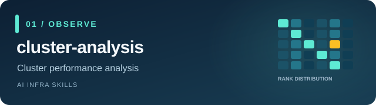

集群性能全景分析
一份 Prof，找出训练或推理到底哪里慢。
- 自动识别单卡、多卡与已有集群输出；支持 TEXT / DB 数据
- 分析计算、通信、Host 下发、慢 Rank、MoE 负载与泳道；23 个正式 recipe + 1 个扩展
- 自动比对通信占比最大/最小卡（有对应数据时），统一生成性能报告
- 输入
- 一份昇腾 Prof 或 cluster_analysis_output
- 交付
- performance_report.html；JSON / CSV / Excel 等（按数据覆盖）